Free patterns
A hobbyist’s site, for hobbyists: free, no ads, no sign-up. I don’t sell anything.

NEW
Basque beret, centred or asymmetric
A single comma-shaped side piece, and the beret falls to one side by itself. Made to measure and lined.
Create a pattern
Free parametric patterns: a made-to-measure safari jacket, hats (bucket hat and berets) and garment details (26 basic shapes, all adjustable: patch pockets (over 100 combinations with gussets, openings and flaps), epaulettes, sleeve tabs, cartridge holders). Enter your measurements and choose your options: the pattern is calculated in your browser and downloaded as an A4 PDF at 1:1 scale, or as a single page for video projection. A test square lets you correct the print if your printer reduces slightly.
Choose a family

Safari jackets
Create a pattern

Hats
Create a pattern
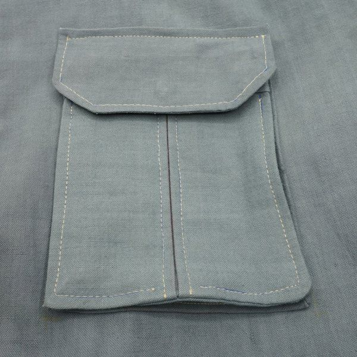
Patch pockets
Create a pattern
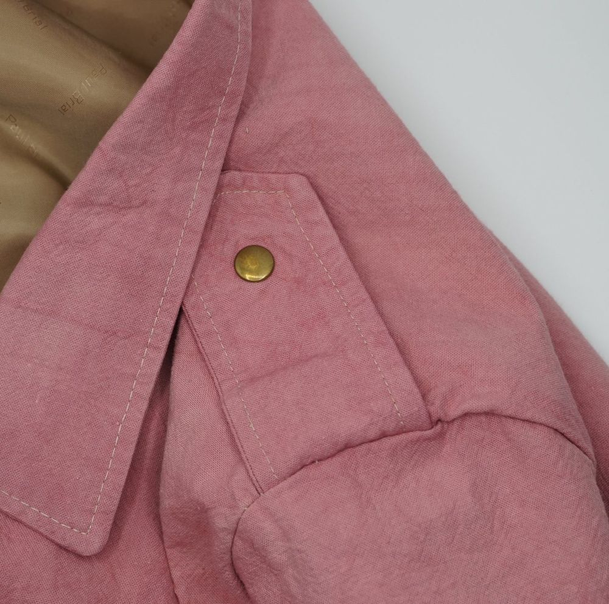
Epaulettes
Create a pattern

Sleeve tabs
Create a pattern
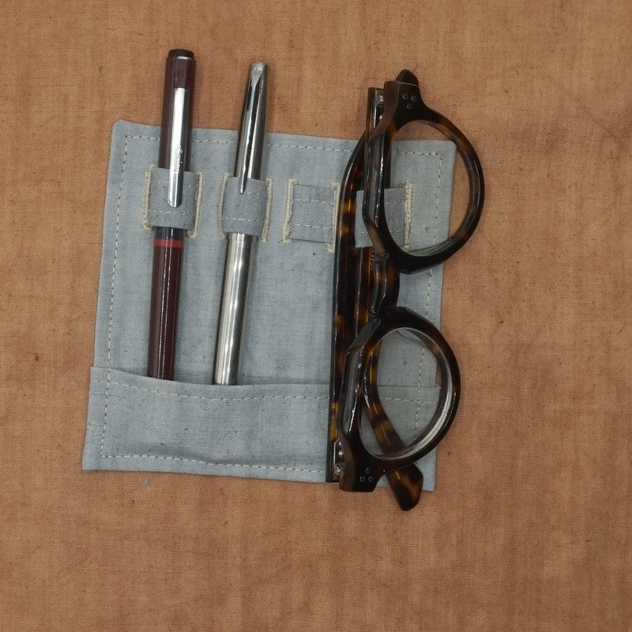
Cartridge holders
Pen and glasses holders
View the pattern
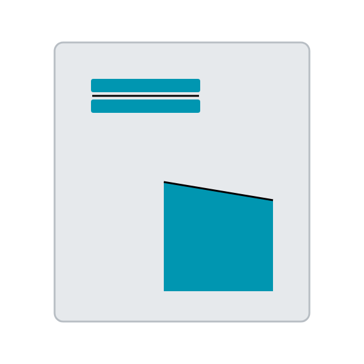
Other pockets
In development
Makes


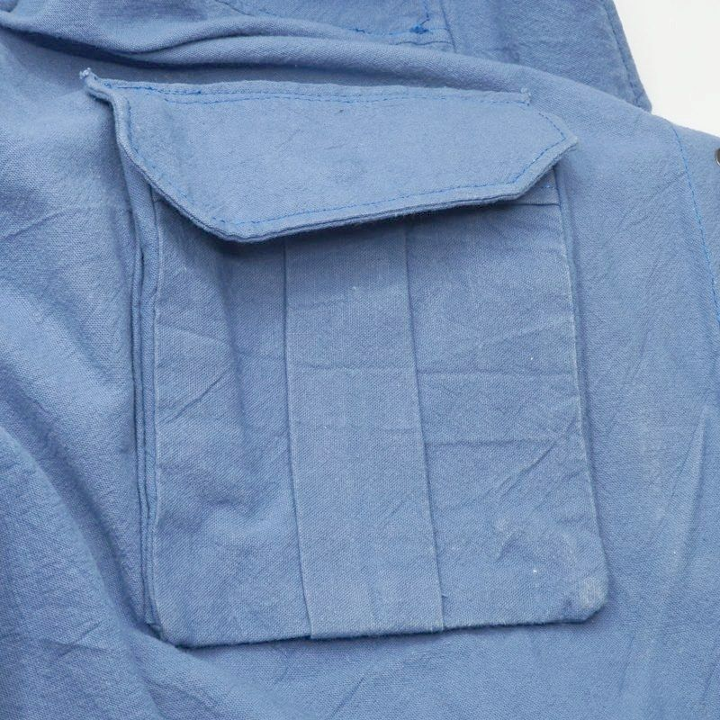
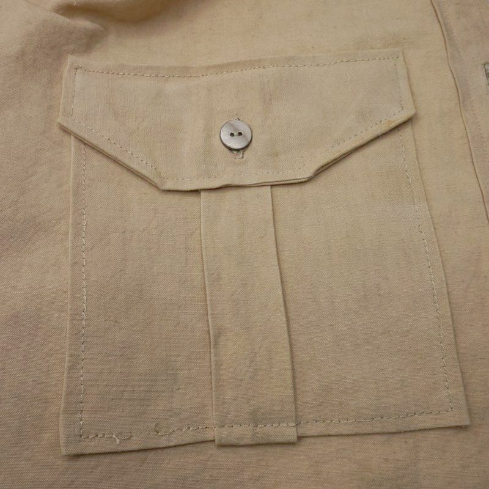


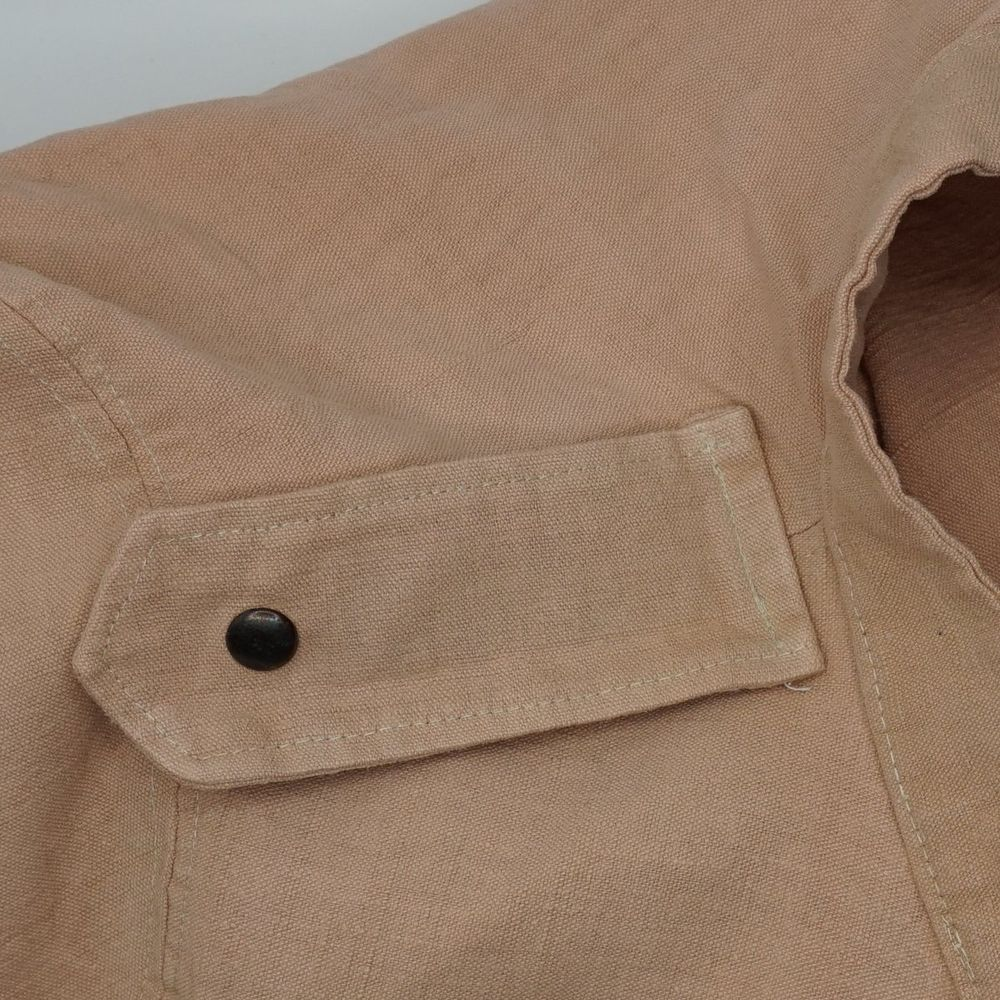
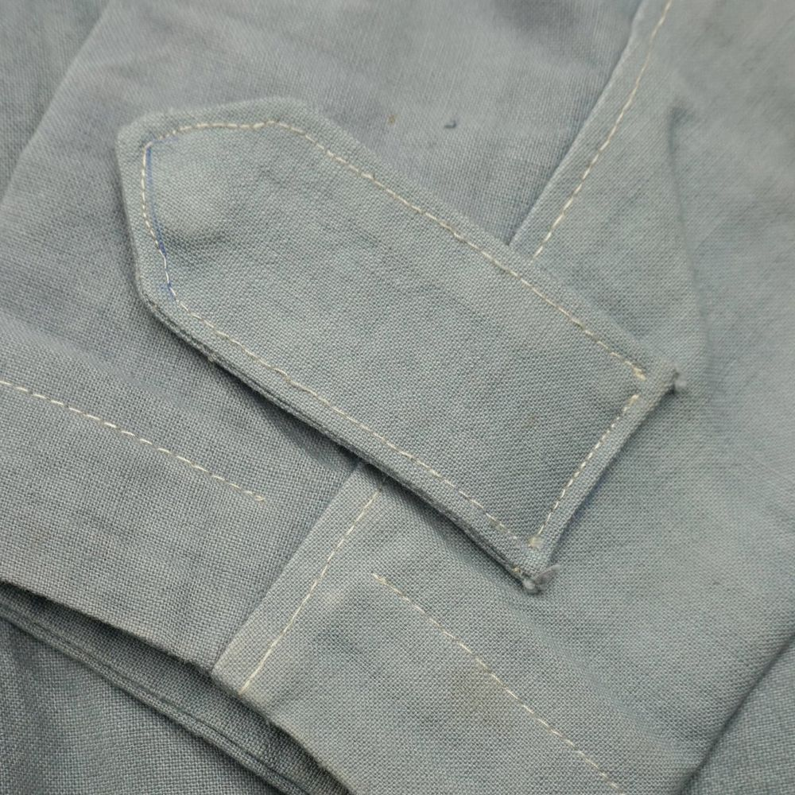

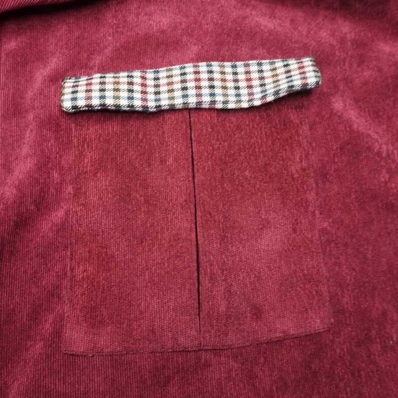
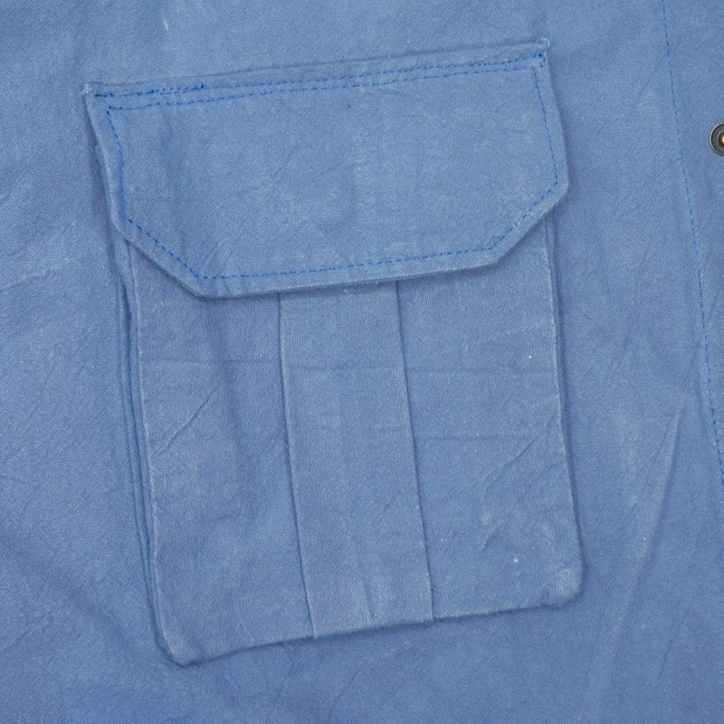
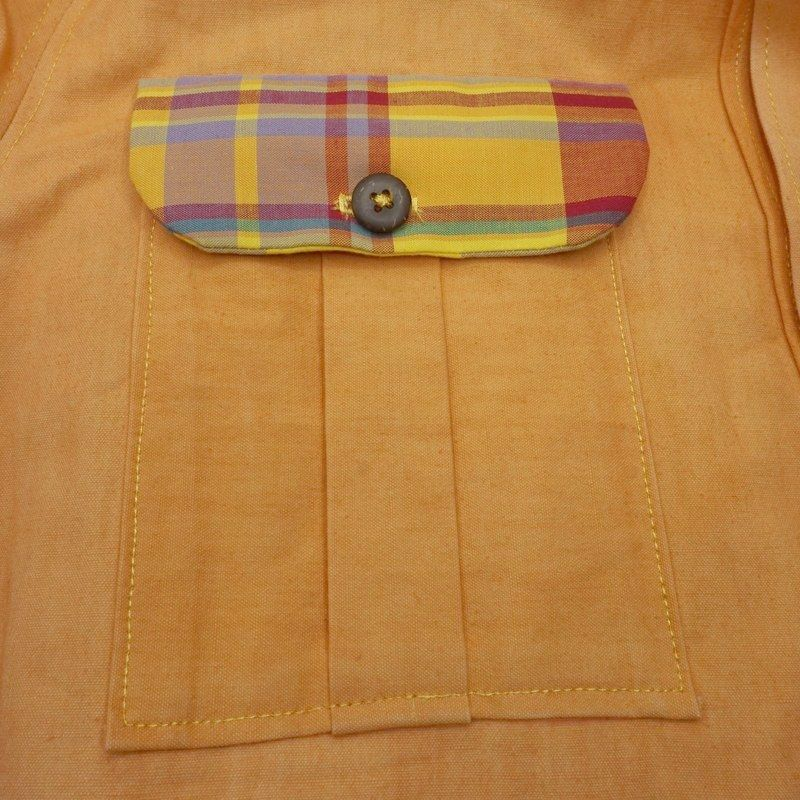

How it works
- Choose your pattern
- Enter the desired characteristics, your measurements and the seam allowance (only the cartridge holder's dimensions are fixed).
- Download the A4 PDF and print it at 100 % (or a full-page PDF for video projection)
Who is behind this site? See About.